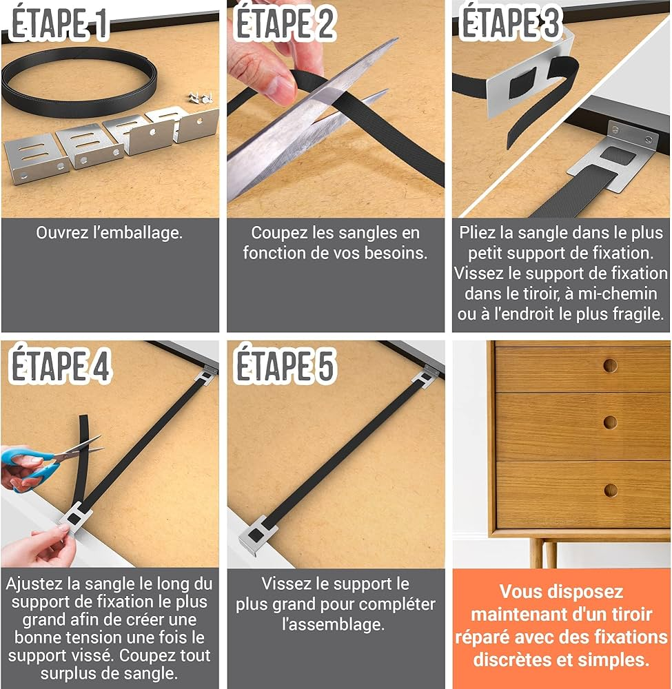

Nos kits de réparation bois – Faites-le vous-même !
Introduction
Chez les artisans ArtiBois, nous croyons que chaque bricoleur peut devenir artisan.
Nos kits de réparation en bois contiennent tout le nécessaire pour redonner vie à vos meubles,même sans expérience.

Contenu des kits
Chaque kit comprend :
- Une notice claire et illustrée, étape par étape
- Des produits naturels (pâte à bois, huile, cire)
- Les outils de base (papier de verre, mini-spatule, gants)
- Un petit guide d’entretien du bois
Types de kits disponibles
- Kit “Rénovation express” : pour les petites rayures et taches.
- Kit “Réparation complète” : pour les meubles fissurés ou défectueux.
- Kit “Finition naturelle” : pour donner un aspect ressemblant à l'orgine de vos meubles.